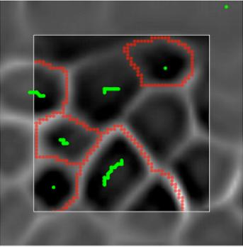

{% extends "base.html" %}
{% block content %}
Collaborative Segmentation
What is collaborative segmentation?
CoSe, short for Collaborative Segmentation, is a web service tool to help users create image
segmentations using an interactive interface. Users from different backgrounds and geographically
apart can now collaborate asynchronously to generate good quality segmentations via the web. Each
user provides results to create a consensus among all participants. By pooling many contributions
CoSe works to reduce the noise and inconsistencies in the results and leverages each and all
contributions while discarding outliers.
How you can collaborate
You collaborate by giving time to do segmentations in CoSe. Every tile you segment counts toward the
final segmentation of an entire image. A complete image may have as few as ten tiles or as many as five
hundred, depending on the image size and its content. And every single tile should be segmented by a
cadre of five or more individuals. Thus the more tiles you do the better the results. Your input does
matter. Tremendously. And your attention to details and acuity are of most importance to identify
gaps and missing edges in difficult images and distinguish between spurious and real data. These are
human traits that computers are not even close to replicate with success.
How you go about it
CoSe needs your input to do its job correctly. It needs
you to guide the segmentation by telling where the
interior of bounded regions are in the image. You do
this by placing green markers (seeds) inside dark
regions, one at a time. After you place a new marker
with a mouse click, the computer traces a red contour
line to indicate the boundaries it has found based on
your input. Segmentation red lines will be shown only
after a second marker is placed in the image. If you
agree with the computer, you can then move on to the
next region and repeat until you cover all the region
boundaries in the tile. At this point press the done
button.
When you disagree with the computer, i.e. you believe
the red line traced by the computer after your input is
not in a proper place, you can use the undo button and
then try a new location and size for your marker until
you achieve the result you believe it is right. In some cases you can move forward with the collocation
of new markers on unmarked regions and the faulty segmentation will eventually be fixed. If the
mistaken segmentation persists then it probably won't be corrected at all and only applying undo or
clean will set you back to a correct state. If at the end you cannot obtain correct results by placing
markers then you should move on to manual editing. In this mode you will manually trace or erase
the faulty segmentation lines placed in the image. Important: only use manual tracing and manual
erasing after you are completely done inserting markers because any manual editing will be
dismissed if you decide to return adding markers after being in manual mode. If you insist placing
markers after manually tracing segmentation lines all your manual labor will be erased.
Whenever you pin a new marker the computer understands that you are asking for the creation of a
new region and it will most certainly create one by outlining its boundaries. So remember not to use
more than one marker for the same region. A marker can be a single point or a continuous scribble.
Scribbles are created in a region by dragging the mouse while pressing its left button. In a touch screen
trace scribbles using your finger. Once a scribble is created you cannot edit it, i.e. you cannot adjust its
length or position – you can remove it using the undo button though. Sometimes one needs to use long
and precise scribbles but often a single mouse click (point) or a short scribble are sufficient for the
computer to determine the correct segmentation. You must provide as many markers as necessary to
segment all regions you see in the image.<
The computer produces accurate results most of the time. Your visual acuity is most crucial in cases
where CoSe cannot completely identify boundaries or these are not well defined. For example, when
contour lines are very dim or gaps exists leading to leakage. In these cases you may need to rely on
manual tracing to build the right segmentation. You will complete, add, or erase red lines to
accomplish that.

Interaction tools
There are a few interaction tools to help you do your
work (refer to image on the side):
undo/redo: use these buttons to undo and
redo your actions (placing markers, erasing,
tracing, clear,...)
view/hide: use thesees or portions of it; control
its size using the mouse wheel.
clean: erase entire work, i.e. trash all
contours
zoom: zoom in(+) and out(-) the tile; use it when it helps visualize image content
restore: restore tile to its original size and position
pan: move tile around
skip: when in doubt and not sure what to do, skip this tile and a new one will be shown
done: submit your work. If you feel the tile content is not worth segmenting, press this button
and a blank result will be submitted. This is different from skip which does not submit any
result.
Use the mouse wheel to increase and decrease the size of markers and when tracing and erasing lines.
You can also click on the grayed frame (area between inner and outer squares) to segment edges
shown on the inner square. Segmentation lines are not shown in this grayed area only in the inner
square. Try not missing the edges bordering the inner square as they are equally important to the final
result.
Each tile is assigned a timeout after which your result is not registered with the system – this is totally
transparent, you will not even notice. Tiles are dimensioned such that it should take you less than a
minute to complete its segmentation. Usually 5 to 10 minutes are assigned to each tile. This is plenty of
time even for the most dubious tiles. In most case, it should take you in average around 15 to 30
seconds to conclude each tile, it depends on how fast you work.
buttons to view and
hide segmentation lines (red) and markers
(green)
manual tracing: click this button when
moving to manually tracing the red
segmentation lines
place markers: this is the button you will
chose to place markers (on by default)
erase: erase red lines or portions of it; control
its size using the mouse wheel.
clean: erase entire work, i.e. trash all
contours
zoom: zoom in(+) and out(-) the tile; use it when it helps visualize image content
restore: restore tile to its original size and position
pan: move tile around
skip: when in doubt and not sure what to do, skip this tile and a new one will be shown
done: submit your work. If you feel the tile content is not worth segmenting, press this button
and a blank result will be submitted. This is different from skip which does not submit any
result.
Use the mouse wheel to increase and decrease the size of markers and when tracing and erasing lines.
You can also click on the grayed frame (area between inner and outer squares) to segment edges
shown on the inner square. Segmentation lines are not shown in this grayed area only in the inner
square. Try not missing the edges bordering the inner square as they are equally important to the final
result.
Each tile is assigned a timeout after which your result is not registered with the system – this is totally
transparent, you will not even notice. Tiles are dimensioned such that it should take you less than a
minute to complete its segmentation. Usually 5 to 10 minutes are assigned to each tile. This is plenty of
time even for the most dubious tiles. In most case, it should take you in average around 15 to 30
seconds to conclude each tile, it depends on how fast you work.
{% endblock %}